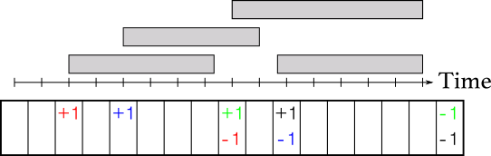
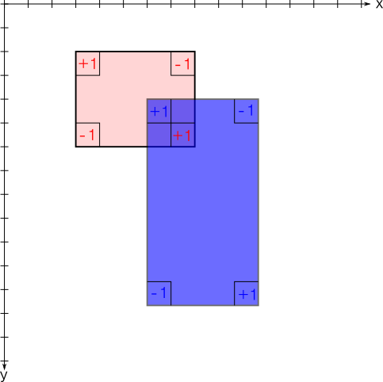
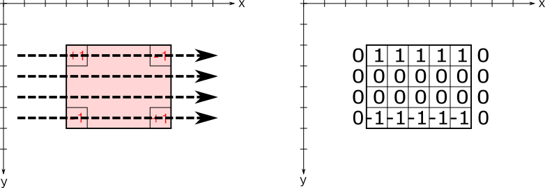
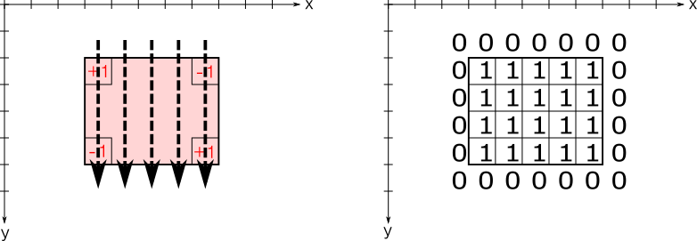

累積話の計算(いもす法)
典型問題
- ある時間までに、お店に来た数の瞬間最大人数
- ある座標に紙を置いていったときの、最大に重なっている枚数
など
実際のプロコンでの問題例
考え方・実装
累積和を\(O(N)\)で求める方法。 いもす研より参照。。 例えば時間軸があってある時間に人が出たり入ったりすると仮定する。 人\(a_i\)さんが入った時刻、出て行った時刻を
a[i] = [a,b] # a:入った時刻、b:出て行った時刻
とした時、以下のようなコードであれば\(O(N)\)で状態を記録できる。
A = [[a0,b0],[a1,b1]...,[aN,bN]] # Input Data
L = [0] * INF # 非常に長い長さのLを設定
MAXT = INF
for a in A:
L[a[0]] += 1
L[a[1] + 1] -= 1
MAXT = min(MAXT, a[1]+1) # Lを最も遅い時刻で切る
このLの最大値はそのまま最も人がたくさんいる時の人数になる。 
イメージ
2次元の場合
２次元のimos法は例えば平面上に長方形の紙を複数配置し、その重ね合わさった枚数が一番多いところの枚数を求める、といった時に使われる。 １次元の時のように、紙の境界だけマークしておけば良いのは同じだが、４隅にマークをつける必要がある。左上、右下だけマークするとそれぞれ端部の右側、下側も構わず加え続けられてしまう。 ただし、以下のように２次元変数一つで済む（x方向とy方向で別々に値を格納する必要がない） 
2次元でのイメージ
これで、以下のコードで最も分厚い場所がわかる。
M = [[0 for _ in range(INF)] for __ in range(INF)] # INF * INF の２次元配列
for i in range(N):
lx, ly, rx, ry = map(int,input().split()) #ここで四隅の座標が入力される
M[ly][lx] += 1 # 左上
M[ly][rx] -= 1 # 右上
M[ry][lx] -= 1 # 左下
M[ry][rx] += 1 # 右下
max_x = max(max_x,rx)
max_y = max(max_y,ry)
# x axis Imos
for j in range(max_y+1):
for i in range(max_x+1):
M[j][i] += M[j][i-1]
# Y axis Imos
for j in range(max_y+1):
for i in range(max_x+1):
M[j][i] += M[j-1][i]
S = [0] * N # 重なった枚数別にその面積を記録するものS[1]は1枚重なったエリアの総面積
for y in range(max_y):
for x in range(max_x):
S[M[y][x]] += 1
それぞれ x axis Imos、y axix Imosのイメージは以下の通り
# x axis Imos
for j in range(max_y+1):
for i in range(max_x+1):
M[j][i] += M[j][i-1]

# Y axis Imos
for j in range(max_y+1):
for i in range(max_x+1):
M[j][i] += M[j-1][i]

ということで面積の計算は最終段で改めて行う。計算量は \(O(N^2)\) である。